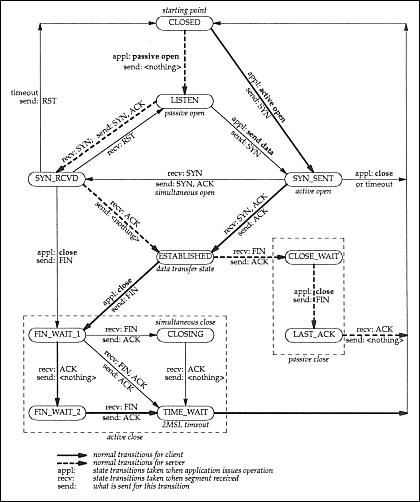

|
Winsock Programmer’s FAQ Articles: Debugging TCP/IP |
by Warren Young
(This article was written with the Winsock programmer in mind, but the information in it can be used by Unix programmers, as well as administrators and technicians.)
TCP is a simple protocol in a certain sense: you send data, it delivers it. Because it was engineered for reliability in networks of uncertain quality, it works around a lot of problems without bothering the end user. But partially because of this reliability, TCP exhibits behaviors that surprise those that don’t truly understand the protocol. This tutorial will introduce you to the most important of these issues, but it’s really the tip of the iceberg. For the submerged part, see TCP/IP Illustrated; the state/transition diagram below comes from volume 2 of that series. It happens to be printed in Volume 1 of the series as well, and in Stevens' Unix Network Programming, volume 1. You can also get that diagram in Postscript format off the web; see the section of the FAQ for a pointer.
In this tutorial, the term "packet" refers to data wrapped in a TCP frame. As a TCP packet goes through the network from one peer to another, the packet may be split into separate hardware frames, or the data within multiple TCP frames may be coalesced. This is as opposed to the "datagram" sense of the term "packet," for an inviolable block of data that is unchanged from sender to receiver.
When a TCP implementation decides to send a packet of data to the remote peer, it first wraps the data with 20-plus bytes of data called the "header". Headers are an essential part of network protocols, because they enable the participants in the network make decisions regarding the data flowing over it. Every protocol adds headers (and sometimes trailers) to your data. We won’t discuss the TCP and IP headers in detail here, as that’s better left to books like W. Richard Stevens'.
Within the header is a field that I will call the "control bits," for lack of a better term. The bits that interest us here are called SYN, ACK, FIN and RST, for "synchronize," "acknowledge," "finish," and "reset," respectively. These bits are set in TCP packets for the sole benefit of the remote peer’s network stack — that is, they are the machinery under the hood that most people never have occasion to examine.
Below is the state/transition diagram for the TCP protocol. The states are in round-ended boxes, and the transitions are the labelled arrows. The transitions show how how your program can make TCP move from one state to another. It also shows how the remote peer can make your stack change TCP states, and how you can recognize these changes at the application level. Note that transition labels come from the names of BSD sockets functions; although there are differences in the Winsock API, the effects are the same at this level. (I apologize for the so-so readability of the text in this image, but it’s already too big at 20K, so I’m unwilling to make it any bigger — if you want a pretty, readable diagram, get the Postscript file and print your own copy.)

Understanding this diagram is really one of the keys to
understanding TCP, so let’s go through a few exercises. But
first, you need to know about the netstat tool. This tool
comes with all Microsoft TCP/IP stacks, and probably others as well. It
is modelled after a Unix tool of the same name, with virtually the
same output. (The differences between each version of this tool are
slight enough that once you learn to use one, the rest are trivial
to pick up.)
The netstat tool is usually run from the command line,
often with the -n flag to make it faster. (-n
suppresses the DNS name lookups, displaying the raw address and port
numbers instead.) Another useful flag is the -a flag, which
shows "all" entries, including listeners. (This only works correctly
in Windows NT derivatives.) It is also very helpful to use this tool
in combination with a "grep" tool — I recommend installing Cygwin, which includes GNU grep.
Microsoft netstats output four columns: the protocol
(e.g. TCP or UDP), the local address/port combination, the remote
address/port combination, and the current state of that connection. The
first three columns are self-explanatory, and are often collectively
called the "connection 5-tuple," which uniquely describes a given
TCP or UDP connection. The last column corresponds directly to the
states in the diagram above.
Now for those exercises I promised:
connect() function
(or similar), which causes TCP to send an empty packet with the
SYN control bit set (SYN_SENT). The remote peer’s stack sees
this "synchronize" request, and sends back an empty packet with
the SYN and ACK bits set (i.e. "I acknowledge your synchronize
request"). When the client receives the SYN/ACK packet, it sends
back an ACK packet, and reports a successful connection to the
client program.SO_LINGER to 0 with setsockopt()
and then call closesocket(). The second method is to call
shutdown() with how equal to 2, optionally followed
by a closesocket() call.shutdown() with the "how" parameter set
to 1 or SD_SEND, but the remote peer doesn’t respond. Likewise
FIN_WAIT_2 happens when the remote peer shuts down its sending half
of the connection, and your program doesn’t respond. Since
FIN_WAIT states often last up to 10 minutes, it’s well worth
the effort to fix the problem that’s causing these FIN_WAIT
states. (The exact length of the state depends on the stack and
the circumstances that got it into that state.)bind() fail when I try to
re-bind to a port that I was just using. What’s wrong?closesocket()
the listener for some reason after each successful connection,
your listener socket will go into the TIME_WAIT state for somewhere
between 30 and 120 seconds, during which you won’t be able
to re-bind to that port. However, if you find that re-binding is
absolutely necessary, setting the SOREUSEADDR option with
setsockopt() will usually get you around the problem.Below is a small batch file I find helpful in dealing with TCP state issues, which I call “showwait.bat.” Basically, it shows you the current WAIT states every second until you hit Ctrl-C.
@echo off
:loop
netstat -na | grep WAIT
sleep 1
goto loop
This script assumes you have the “grep” and “sleep” programs on your system, and that they’re in the PATH. The easiest way to get it is to install Cygwin, mentioned above. (Are you maybe getting the impression that I don’t program only for Windows? Oh, noooo.... :) ) The Unix version is slightly nicer, since the Bourne shell has real loops:
#!/bin/sh
while true; do
netstat -a | grep WAIT
sleep 1
done
This runs fine on Cygwin, too.
There’s one problem with this tool: it only catches problems with WAIT in their name. Less common states like LAST_ACK and SYN_RCVD won’t be seen by this script. SYN_RCVD in particular signals serious problems if it stays around for a prolonged amount of time, because it indicates that a remote machine sent your machine a SYN packet, your machine ACK’d it, and the remote machine has failed to ACK your SYN/ACK. Since this exchange typically only takes from a few tens to a few hundreds of milliseconds, a persistent SYN_RCVD indicates a badly-written network stack, or a very "crashy" computer. If you see many of these states at once, it may mean you’re under a "SYN attack", one of several Denial of Service attacks that are going around these days. At that point, it’s time to break out the network sniffer and start some detective work.
The techniques and information in this article reflect the basic mental tools that your organization needs to develop, even if it’s just appointing a single “networking guru” who will master this material, and become a resource for the other developers in the company. This knowledge is very widely useful; for example, it can make reading sniffer dumps less painful and more productive. Also, these techniques can reasonably be applied by technicians working with knowledgeable users over the phone to gather information about failures in your program that otherwise would get logged as random failures.
Copyright © 1998-2000 by Warren Young. All rights reserved.
|
<< The Lame List |
The Straight Dope on Packet Sniffers >> |
| Updated Sun Feb 21 2010 02:38 MST | Go to my home page |